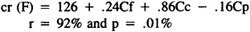
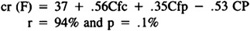
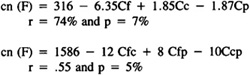

by Abraham Kandel
CRC Press, CRC Press LLC
ISBN: 084934297x Pub Date: 11/01/91
|
|
Fuzzy Expert Systems
by Abraham Kandel CRC Press, CRC Press LLC ISBN: 084934297x Pub Date: 11/01/91 |
| Previous | Table of Contents | Next |
The dependence on Cc is in accordance with the well-known dominance of the left central areas in the case of language processing.5,36,37 However, the inverse dependence on Cf and Cp points also to a right hemisphere involvement on speech recognition.
Correlation assigned to each phrase cr(F) depended on the same parameters:

It was dependent on a left dominance at frontal and central areas. However, the participation of the right hemisphere was stressed by the dependence of c(F) on Cfc, Cfp, and Ccp calculated for the right but not for the left sites:

This function stressed the participation of the frontal areas on the organization of the text structure as proposed by Luria.27
Confidence on each phrase cn (F) was also dependent on the cerebral activity:

Confidence has a more complicated and weak dependence on the EEG activity if compared to correlation.
These results,18 although initial ones, clearly demonstrated that it is possible to bring logic under neurophysiological investigation by using fuzzy set theory. If biology was successful in handling inductive learning, now it might contribute to a better understanding of the process of logic inference. This interdisciplinary approach opens new frontiers toward a sound theory of human knowledge.
A new paradigm for knowledge investigation may be outlined from the above experiments, devoting its attention to disclose the basic rules used by human experts in dealing with his special domain of knowledge. The target on this new paradigm is not the isolated expert, but a whole population of them. Its main objective is to understand and to model the knowledge shared by a group of experts, which may represent the general way of thinking of a school of knowledge, in order to try to understand and to model the human expertise, instead of the human expert.
The investigation begins with the delimitation of its own purposes. It is necessary to outline the limits (goals, data and population) of the expertise to be investigated. For instance, in the case of medical expert systems, this implies definition of:
The study will involve the investigation of:
Initial results obtained by applying this approach to model congenital heart diseases will be reported in the last section of this chapter.
The first step of the investigation is to obtain the expert knowledge using the fuzzy graph theory to construct the structure of the used expert models.
The selected experts are provided with a list of generic data and asked to separate those elements of the list correlated with the specified goals (in our experiments, a clinical diagnosis). Generic data means the theoretical data associated with the chosen goals by the specialized literature.
The next step is to order this sublist according with the importance the experts assume the data have in relation to the chosen goals (diagnosis). These ordered sublists are considered as the sets of terminal nodes of the fuzzy graphs that will describe the expert model used to reach the defined goals or diagnosis.
The investigation proceeds by asking the experts to join the terminals on second order nodes, the second order nodes on third order nodes, etc. in the same way they assume the data have to be organized to support the chosen goals. This provides the experimenter with a family of graphs related to the set of goals or diagnosis under investigation.
Once the expert model graphs are built the experts are requested to assign the degree of correlation (in the closed interval [0,1]) that they assume the information at each node shares with the chosen goals. Also, they have to select the logic connectives used to join the information at each node. This completes the initial phase of knowledge acquisition.
In the sequence, the collected expert model graphs are submitted to a statistical analysis to generate mean expert model graphs for each of the selected goals or diagnosis. This is accomplished by selecting f-cut level graphs composed by those nodes exhibiting a frequency equal or greater than the specified f-threshold. If the node distribution is not crisp, a family of f-cut fuzzy graphs will be generated to describe the representation of the knowledge in the studied population.
This procedure may be applied to a set of f-threshold values or it may be generalized a p-level set35,46 to represent each expert model in the population, by making:
lim f → 0
The generic data are associated to the terminal nodes of the calculated mean expert model graphs according to their probability of occurrence in the studied population and according to their calculated distribution over the terminal nodes. If different data have the same probability to occupy a specified node, the most frequent datum used by the population will be preferred at this position.
There is another source of fuzziness at this point. If data distribution over the mean graph is not crisp, then a family of graphs have to be constructed to accommodate the most frequent data association.
The calculated mean for each node is then assigned to the nodes of the mean expert model graphs. The used connectives are distributed over the mean graphs with the aid of the same rules used to localize data at the terminal nodes.
This step ends the study of the knowledge environment. This phase provides the experimenter with a family of fuzzy expert models representing the specific domain of knowledge in the chosen population.
| Previous | Table of Contents | Next |